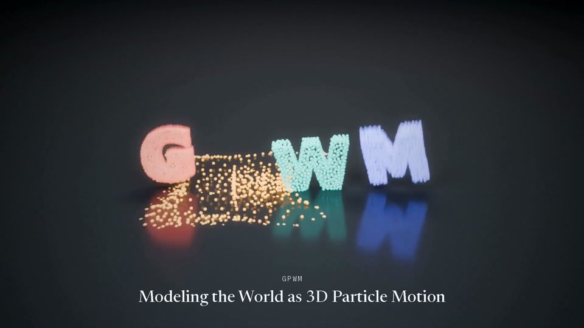

▶ click for full teaser
GPWM: Modeling the World as 3D Particle Motion
*Equal contribution, ordered by coin flip
arXiv 2026 Best Research Paper Award, CoRL 2026 Workshop “Do Robots Need World Models?”
arXiv 2026 Best Research Paper Award, CoRL 2026 Workshop “Do Robots Need World Models?”
Keywords: World Models, 3D Dynamics, Generative Models, Planning
TL;DR: We train a 3D particle world model that achieves state-of-the-art dynamics prediction across rigid, deformable, cloth, and granular materials. Optimizing the model’s latent noise lets the same generative world model serve as an effective planner for contact-rich tasks.